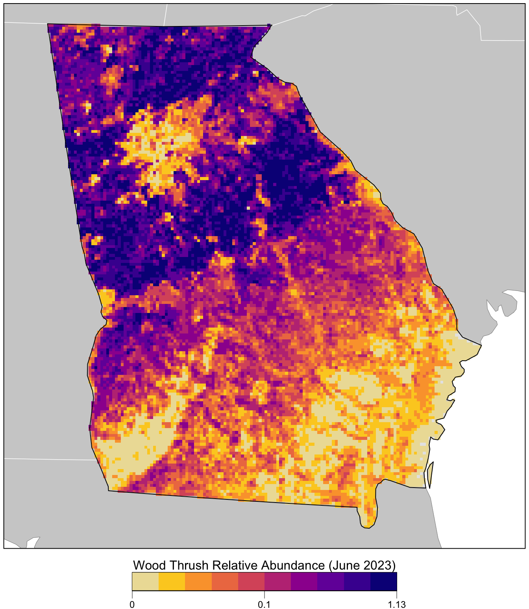

library(ebirdst)
library(fields)
library(gridExtra)
library(mccf1)
library(ranger)
library(scam)
library(sf)
library(terra)
library(tidyverse)
# set random number seed to insure fully repeatable results
set.seed(1)
# setup results directory for saved results
dir.create("results/", showWarnings = FALSE, recursive = TRUE)
# habitat variables: landcover and elevation
habitat <- read_csv("data/environmental-variables_checklists.csv")
# zero-filled ebird data combined with habitat data
checklists <- read_csv("data/checklists-zf_woothr_june_us-ga.csv") %>%
inner_join(habitat, by = "checklist_id")
# prediction grid
pred_grid <- read_csv("data/environmental-variables_prediction-grid.csv")
r <- rast("data/prediction-grid.tif") %>%
# this second rast() call removes all the values from the raster template
rast()
crs <- st_crs(r)
# load gis data for making maps
study_region <- read_sf("data/gis-data.gpkg", "ne_states") %>%
filter(state_code == "US-GA") %>%
st_transform(crs = crs) %>%
st_geometry()
ne_land <- read_sf("data/gis-data.gpkg", "ne_land") %>%
st_transform(crs = crs) %>%
st_geometry()
ne_country_lines <- read_sf("data/gis-data.gpkg", "ne_country_lines") %>%
st_transform(crs = crs) %>%
st_geometry()
ne_state_lines <- read_sf("data/gis-data.gpkg", "ne_state_lines") %>%
st_transform(crs = crs) %>%
st_geometry()5 Relative Abundance
Chapter 4 focused on modeling encounter rate, the probability of detecting a species on a standard eBird checklist. However, in addition to recording which species they observed, most eBirders also specify how many individuals of each species were observed. So, in this chapter, we’ll take advantage of these counts to model a relative measure of species abundance.
To motivate this chapter, we will focus on the specific goal of estimating a map of relative abundance. This type of map would help us to identify areas with higher or lower abundance. The metric we’ll use to estimate abundance is the expected number of individuals observed on a standardized eBird checklist. Like the encounter rate model, the abundance model we present in this section accounts for variation in detection rates but it does not directly estimate the absolute detection probability. For this reason, the estimates of abundance we make can only be interpreted as a measure of relative abundance; an index of the count of individuals of the species present in the search area. To match the common terminology in the literature, we refer to this as an estimate of relative abundance.
The relative abundance model presented here is similar to and a natural extension of the encounter rate model of Chapter 4. In particular, we use a two-step hurdle model following Keyser et al. (2023). In the first step, we estimate encounter rate using exactly the same method as in Chapter 4. In the second step, we estimate the expected count of individuals on eBird checklists where the species was detected. Finally, we multiply encounter rate by median count to produce an estimate of relative abundance. We use random forests for both steps of the hurdle.
5.1 Data preparation
Let’s get started by loading the necessary packages and data. If you worked through the previous chapters, you should have all the data required for this chapter. However, you may want to download the data package, and unzip it to your project directory, to ensure you’re working with exactly the same data as was used in the creation of this book.
Next, following the approach outlined in Section 4.3, we’ll perform a round of spatiotemporal subsampling on the data to reduce bias.
# sample one checklist per 3km x 3km x 1 week grid for each year
# sample detection/non-detection independently
checklists_ss <- grid_sample_stratified(checklists,
obs_column = "species_observed",
sample_by = "type")Finally, we’ll remove the 20% of checklists held aside for testing and select only the columns we intend to use as predictors to train the models.
checklists_train <- checklists_ss %>%
filter(type == "train") %>%
# select only the columns to be used in the model
select(species_observed, observation_count,
year, day_of_year, hours_of_day,
effort_hours, effort_distance_km, effort_speed_kmph,
number_observers,
starts_with("pland_"),
starts_with("ed_"),
starts_with("elevation_"))5.2 Hurdle model
For this two-step hurdle model, we’ll start by training exactly the same encounter rate model as in the Chapter 4. Then we’ll subset the eBird checklist to only those where the species was detected or predicted to occur by the encounter rate model. We’ll use this subset of the data to train a second random forests model for expected count. Finally we’ll combine the results of the two steps together to produce estimates of relative abundance.
5.2.1 Step 1: Encounter rate
If you haven’t done so, read Chapter 4 for details on the calibrated encounter rate model. Here we repeat the process of modeling encounter rate in a compressed form.
# calculate detection frequency for the balance random forest
detection_freq <- mean(checklists_train$species_observed)
# train a random forest model for encounter rate
train_er <- select(checklists_train, -observation_count)
er_model <- ranger(formula = as.factor(species_observed) ~ .,
data = train_er,
importance = "impurity",
probability = TRUE,
replace = TRUE,
sample.fraction = c(detection_freq, detection_freq))
# select the mcc-f1 optimizing occurrence threshold
obs_pred <- tibble(obs = as.integer(train_er$species_observed),
pred = er_model$predictions[, 2])
mcc_f1 <- mccf1(response = obs_pred$obs, predictor = obs_pred$pred)
mcc_f1_summary <- summary(mcc_f1)
threshold <- mcc_f1_summary$best_threshold[1]
# calibration model
calibration_model <- scam(obs ~ s(pred, k = 6, bs = "mpi"),
gamma = 2,
data = obs_pred)
#> mccf1_metric best_threshold
#> 0.404 0.5745.2.2 Step 2: Expected count
For the second step, we train a random forests model to estimate the expected count of individuals on eBird checklists where the species was detected or predicted to be detected by the encounter rate model. So, we’ll start by subsetting the data to just these checklists. In addition, we’ll remove any observations for which the observer reported that Wood Thrush was present, but didn’t report a count of the number of individuals (coded as a count of “X” in the eBird database, but converted to NA in our dataset).
# attach the predicted encounter rate based on out of bag samples
train_count <- checklists_train
train_count$pred_er <- er_model$predictions[, 2]
# subset to only observed or predicted detections
train_count <- train_count %>%
filter(!is.na(observation_count),
observation_count > 0 | pred_er > threshold) %>%
select(-species_observed, -pred_er)We’ve found that including estimated encounter rate as a predictor in the count model improves predictive performance. So, with this in mind, we predict encounter rate for the training dataset and add it as an additional column.
predicted_er <- predict(er_model, data = train_count, type = "response")
predicted_er <- predicted_er$predictions[, 2]
train_count$predicted_er <- predicted_erFinally, we train a random forests model to estimate count. This is superficially very similar to the random forests model for encounter rate; however, for count we’re using a regression random forest while for encounter rate we used a balanced classification random forest.
count_model <- ranger(formula = observation_count ~ .,
data = train_count,
importance = "impurity",
replace = TRUE)5.2.3 Assessment
In the Section 4.4.3 we calculated a suite of predictive performance metrics for the encounter rate model. These metrics should also be considered when modeling relative abundance; however, we won’t duplicate calculation of these metrics here. Instead we’ll calculate Spearman’s rank correlation coefficient for both count and relative abundance and Pearson correlation coefficient for the log of count and relative abundance. We’ll start by estimating encounter rate, count, and relative abundance for the spatiotemporally grid sampled test dataset.
# get the test set held out from training
checklists_test <- filter(checklists_ss, type == "test") %>%
mutate(species_observed = as.integer(species_observed)) %>%
filter(!is.na(observation_count))
# estimate encounter rate for test data
pred_er <- predict(er_model, data = checklists_test, type = "response")
# extract probability of detection
pred_er <- pred_er$predictions[, 2]
# convert to binary using the threshold
pred_binary <- as.integer(pred_er > threshold)
# calibrate
pred_calibrated <- predict(calibration_model,
newdata = data.frame(pred = pred_er),
type = "response") %>%
as.numeric()
# constrain probabilities to 0-1
pred_calibrated <- pmin(pmax(pred_calibrated, 0), 1)
# add predicted encounter rate required for count estimates
checklists_test$predicted_er <- pred_er
# estimate count
pred_count <- predict(count_model, data = checklists_test, type = "response")
pred_count <- pred_count$predictions
# relative abundance is the product of encounter rate and count
pred_abundance <- pred_calibrated * pred_count
# combine all estimates together
obs_pred_test <- data.frame(
id = seq_along(pred_abundance),
# actual detection/non-detection
obs_detection = as.integer(checklists_test$species_observed),
obs_count = checklists_test$observation_count,
# model estimates
pred_binary = pred_binary,
pred_er = pred_calibrated,
pred_count = pred_count,
pred_abundance = pred_abundance
)The count and abundance predictive performance metrics are measures of within range performance, meaning we compare observed count vs. estimated count and abundance only for those checklists where the model predicts the species to occur.
# subset to only those checklists where detection is predicted
detections_test <- filter(obs_pred_test, pred_binary > 0)
# count metrics
count_spearman <- cor(detections_test$pred_count,
detections_test$obs_count,
method = "spearman")
log_count_pearson <- cor(log(detections_test$pred_count + 1),
log(detections_test$obs_count + 1),
method = "pearson")
# abundance metrics
abundance_spearman <- cor(detections_test$pred_abundance,
detections_test$obs_count,
method = "spearman")
log_abundance_pearson <- cor(log(detections_test$pred_abundance + 1),
log(detections_test$obs_count + 1),
method = "pearson")
# combine metrics together
ppms <- tibble(
count_spearman = count_spearman,
log_count_pearson = log_count_pearson,
abundance_spearman = abundance_spearman,
log_abundance_pearson = log_abundance_pearson
)
knitr::kable(pivot_longer(ppms, everything()), digits = 3)| name | value |
|---|---|
| count_spearman | 0.348 |
| log_count_pearson | 0.422 |
| abundance_spearman | 0.350 |
| log_abundance_pearson | 0.437 |
The Spearman’s correlations tell us about the ability of the model to estimate the rank order of counts and relative abundance, something that these models often perform better with. The Pearson’s correlations give us information about the ability of the model to estimate absolute counts on the log scale, a task that is often more difficult to do with eBird data, especially for congregatory species that often have high counts. Again, as with the binary performance metrics, these are useful in comparing model quality across species, region, and season.
5.3 Prediction
Just as we did in the Section 4.6 for encounter rate, we can estimate relative abundance over our prediction grid. First we estimate encounter rate and count, then we multiply these together to get an estimate of relative abundance. Let’s start by adding the effort variables to the prediction grid for a standard eBird checklist at the optimal time of day for detecting Wood Thrush. Recall from the Section 4.6.1 that we determined the optimal time of day for detecting Wood Thrush was around 6:15AM.
pred_grid_eff <- pred_grid %>%
mutate(observation_date = ymd("2022-06-15"),
year = year(observation_date),
day_of_year = yday(observation_date),
# determined as optimal time for detection in previous chapter
hours_of_day = 6.2,
effort_hours = 2,
effort_distance_km = 1,
effort_speed_kmph = 0.5,
number_observers = 1)Now we can estimate calibrated encounter rate and count for each point on the prediction grid. We also include a binary estimate of the range boundary.
# encounter rate estimate
pred_er <- predict(er_model, data = pred_grid_eff, type = "response")
pred_er <- pred_er$predictions[, 2]
# binary prediction
pred_binary <- as.integer(pred_er > threshold)
# apply calibration
pred_er_cal <- predict(calibration_model,
data.frame(pred = pred_er),
type = "response") %>%
as.numeric()
# add predicted encounter rate required for count estimates
pred_grid_eff$predicted_er <- pred_er
# count estimate
pred_count <- predict(count_model, data = pred_grid_eff, type = "response")
pred_count <- pred_count$predictions
# add estimates to prediction grid
predictions <- bind_cols(pred_grid_eff,
in_range = pred_binary,
encounter_rate = pred_er_cal,
count = pred_count) %>%
select(cell_id, x, y, in_range, encounter_rate, count) %>%
mutate(encounter_rate = pmin(pmax(encounter_rate, 0), 1))Next, we add a column for the relative abundance estimate (the product of the encounter rate and count estimates), and convert these estimates to raster format.
r_pred <- predictions %>%
# estimate relative abundance
mutate(abundance = encounter_rate * count) %>%
# convert to spatial features
st_as_sf(coords = c("x", "y"), crs = crs) %>%
select(in_range, encounter_rate, count, abundance) %>%
# rasterize
rasterize(r, field = c("in_range", "encounter_rate", "count", "abundance"),
fun = "mean") %>%
setNames(c("in_range", "encounter_rate", "count", "abundance"))
# save the raster
# 3 bands: encounter_rate, count, and relative abundance
r_pred <- writeRaster(r_pred, "results/abundance_woothr_june-2022.tif",
overwrite = TRUE,
gdal = "COMPRESS=DEFLATE")Finally we’ll produce a map of relative abundance. The values shown on this map are the expected number of Wood Thrush seen by an average eBirder conducting a 2 hour, 1 km checklist for which counting started at about 6:15AM on June 15, 2022. Since detectability is not perfect, we expect true Wood Thrush abundance to be higher than these values, but without estimating the detection rate directly it’s difficult to say how much higher.
Prior to mapping the relative abundance, we’ll multiple by the in_range layer, which will produce a map showing zero relative abundance where the model predicts that Wood Thrush does not occur.
# in range abundance
r_plot <- r_pred[["abundance"]] * r_pred[["in_range"]]
par(mar = c(3.5, 0.25, 0.25, 0.25))
# set up plot area
plot(study_region, col = NA, border = NA)
plot(ne_land, col = "#cfcfcf", border = "#888888", lwd = 0.5, add = TRUE)
# define quantile breaks, excluding zeros
brks <- ifel(r_plot > 0, r_plot, NA) %>%
global(fun = quantile,
probs = seq(0, 1, 0.1), na.rm = TRUE) %>%
as.numeric() %>%
unique()
# label the bottom, middle, and top value
lbls <- round(c(min(brks), median(brks), max(brks)), 2)
# ebird status and trends color palette
pal <- abundance_palette(length(brks) - 1)
plot(r_plot,
col = c("#e6e6e6", pal), breaks = c(0, brks),
maxpixels = ncell(r_plot),
legend = FALSE, axes = FALSE, bty = "n",
add = TRUE)
# borders
plot(ne_state_lines, col = "#ffffff", lwd = 0.75, add = TRUE)
plot(ne_country_lines, col = "#ffffff", lwd = 1.5, add = TRUE)
plot(study_region, border = "#000000", col = NA, lwd = 1, add = TRUE)
box()
# legend
par(new = TRUE, mar = c(0, 0, 0, 0))
title <- "Wood Thrush Relative Abundance (June 2022)"
image.plot(zlim = c(0, 1), legend.only = TRUE,
col = pal, breaks = seq(0, 1, length.out = length(brks)),
smallplot = c(0.25, 0.75, 0.06, 0.09),
horizontal = TRUE,
axis.args = list(at = c(0, 0.5, 1), labels = lbls,
fg = "black", col.axis = "black",
cex.axis = 0.75, lwd.ticks = 0.5,
padj = -1.5),
legend.args = list(text = title,
side = 3, col = "black",
cex = 1, line = 0))